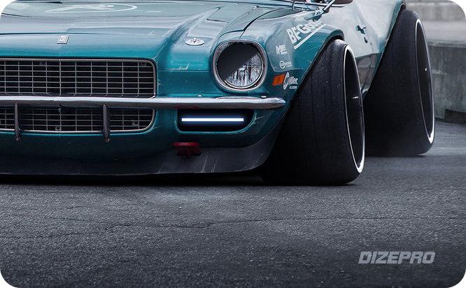

食摄集美食摄影工作室FOODOGRAPHY服务项目包含： 美食摄影 / 饮品摄影 / 电商产品摄影 / 美妆摄影 / 电器摄影 / 视频制作
FOODOGAPHY美食摄影工作室成立于2013年，我们一直以来专注于美食摄影与美食造型研究，作为第一批新派美食摄影先行者，必然对美食有更不一样的解读，从而形成了自己独有的摄影风格，通过用拍美食的手法去拍摄其他领域的产品，形成爆款图片思维。后来成功从美食摄影跨界到电器/美妆/母婴产品/商业人像等领域的拍摄,创造出很多富有爆炸性的创意摄影作品。
服务过客户：麦当劳 / 迪士尼 / 雀巢咖啡 / 达能 / Godiva歌蒂梵 / TWG特威茶业 / 无穷食品 / SKG / 春纪 / 丸美 / 广州酒家 / 三只松鼠等知名品牌。
展开全部介绍
美食摄影 / 饮品摄影 / 电商产品摄影 / 美妆摄影 / 电器摄影 / 视频制作
其他作品

评论区
推荐作品
-

高手如何玩转汽车海报
平面设计

Eric Wu
1334 467 108 -
高手如何玩转汽车海报
平面设计
Eric Wu
1334 467 108 -
高手如何玩转汽车海报
平面设计
Eric Wu
1334 467 108 -
高手如何玩转汽车海报
平面设计
Eric Wu
1334 467 108